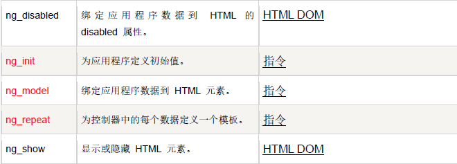
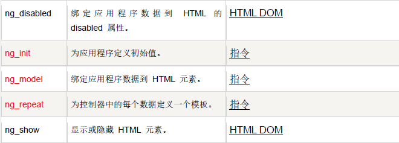

什么是Angularjs
AngularJS诞生于2009年，由Misko Hevery 等人创建，后被Google收购。是一款优秀的前端JS框架，已用于Google的多款产品当中 如Gmail、Maps、Calender 等。AngularJS有着诸多特性，最为核心的是：MVVM、模块化、自动化双向数据绑定、语义化标签(指令)、依赖注入
AngularJS功能：
AngularJS 是专门为应用程序（APP）设计的 HTML。
AngularJS 使得开发现代的单一页面应用程序（SPAs：Single Page Applications）变得更加容易。
Angularjs号称 下一代web应用 主要特性如下：
- MVC
- 模块化与依赖注
- 双向数据绑定
- 指令与UI控件
下载的两方式
使用AngularJs 必须首先做的两件事
- 下载加载 angular.js 库
- 使用ng-app 指令告诉 angular 应该管理DOM中的哪一些部分（通常的一个应用只有一个ng-app,ng-app是angular应用的入口）
<!DOCTYPE html>
<html>
<head>
<meta http-equiv="Content-Type" content="text/html; charset=utf-8" />
<title>无标题文档</title>
<script type="text/javascript" src="angular-1.3.0.js"></script>
</head>
<body>
<div ng-app="">
<p>在输入框中尝试输入：</p>
<p>姓名：<input type="text" ng-model="name"></p>
<p ng-bind="name"></p>
</div>
</body>
</html>
Angularjs中常用名词 也就是所说的常用指令
 
